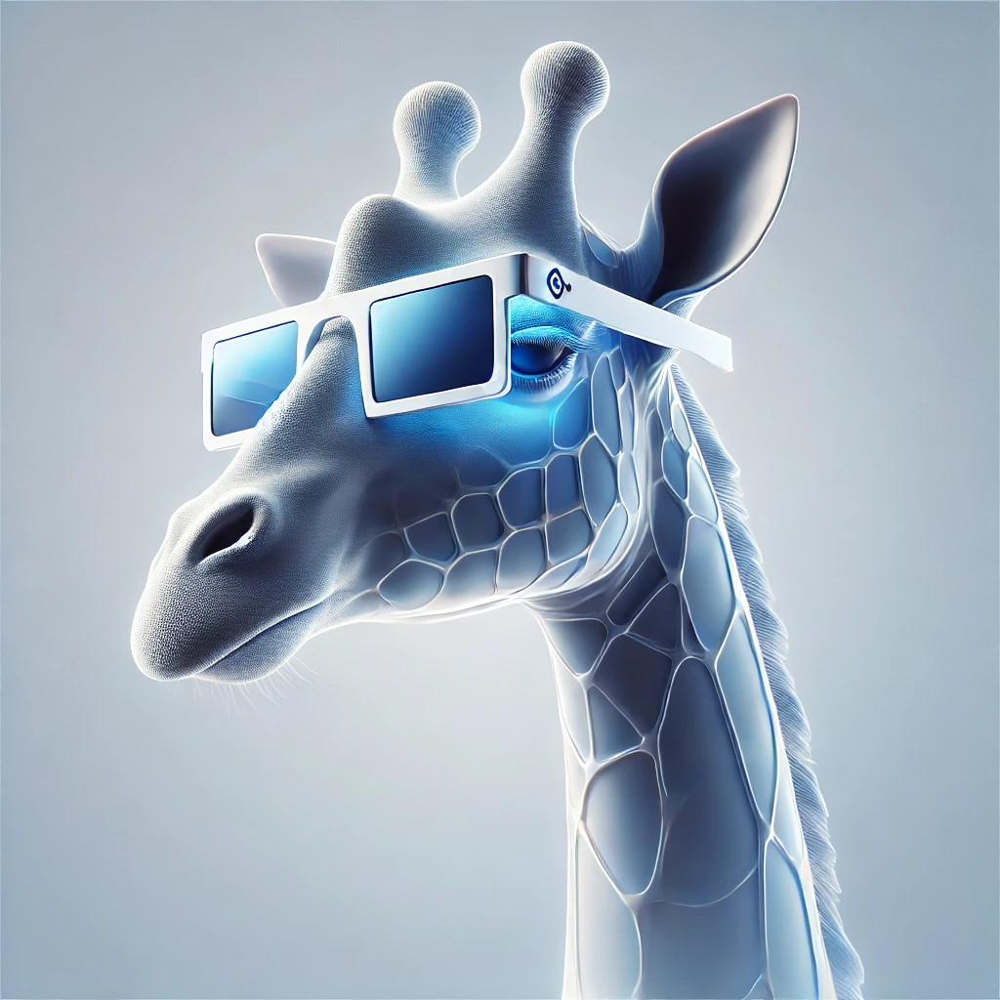

Kairun Wen 「温凯润」
| 
| CV |
Email |
Github |
| Google Scholar |
HuggingFace |
| LinkedIn |
RedNote |
Youtube |
|
I am an incoming Ph.D. student at MMLab, The Chinese University of Hong Kong, advised by Prof. Hongsheng Li. Currently, I am pursuing my master’s degree in the School of Informatics at Xiamen University, advised by Prof. Xinghao Ding. I have research experience with leading research groups across academia and industry, including VITA-Group@UT Austin and InternRobotics@Shanghai AI Lab. My long-term research goal is to develop an efficient and scalable Embodied Agent that can continuously perceive, understand and interact with the physical world through Multi-modal Spatial Intelligence.
My current research primarily covers the following topics:
- 3D/4D World Modeling and Scene Understanding: Physically grounded modeling of dynamic scenes and spatio-temporal reasoning.
- Efficient 3D Representation Learning: Few-shot, data-efficient, and compute-efficient 3D learning for large-scale environments.
- Embodied AI and Interactive Agents: Planning, decision-making, and reinforcement learning for agents acting in the physical world.
WeChat: kairun_wen Email: wenkairun@gmail.com
|
- [09/2025] Two papers were accepted to NeurIPS'25 🎉!
- [09/2024] Our NeurIPS'24 (LightGaussian) is selected as spotlight presentation!
| Publications ( * denotes equal contribution, † denotes project lead ) |
|
|
DynamicVerse: A Physically-Aware Multimodal Framework for 4D World Modeling
Kairun Wen*†, Yuzhi Huang*, Runyu Chen, Hui Zheng, Yunlong Lin, Panwang Pan, Chenxin Li, Wenyan Cong, Jian Zhang, Junbin Lu, Chenguo Lin, Dilin Wang, Zhicheng Yan, Hongyu Xu, Justin Theiss, Yue Huang, Xinghao Ding, Rakesh Ranjan, Zhiwen Fan
NeurIPS 2025
Project |
Paper |
Abstract |
Bibtex |
Video |
HF Data |
Code
Understanding the dynamic physical world, characterized by its evolving 3D structure, real-world motion, and semantic content with textual descriptions, is crucial for human-agent interaction and enables embodied agents to perceive and act within real environments with human-like capabilities. However, existing datasets are often derived from limited simulators or utilize traditional Structurefrom-Motion for up-to-scale annotation and offer limited descriptive captioning, which restricts the capacity of foundation models to accurately interpret real-world dynamics from monocular videos, commonly sourced from the internet.
To bridge these gaps, we introduce DynamicVerse, a physical-scale, multimodal 4D world modeling framework for dynamic real-world video. We employ large vision, geometric, and multimodal models to interpret metric-scale static geometry, real-world dynamic motion, instance-level masks, and holistic descriptive captions. By integrating window-based Bundle Adjustment with global optimization, our method converts long real-world video sequences into a comprehensive 4D multimodal format. DynamicVerse delivers a large-scale dataset consisting of 100K+ videos with 800K+ annotated masks and 10M+ frames from internet videos. Experimental evaluations on three benchmark tasks, namely video depth estimation, camera pose estimation, and camera intrinsics estimation, demonstrate that our 4D modeling achieves superior performance in capturing physical-scale measurements with greater global accuracy than existing methods.
@misc{wen2025dynamicverse,
title={DynamicVerse: A Physically-Aware Multimodal Framework for 4D World Modeling},
author={Kairun Wen and Yuzhi Huang and Runyu Chen and Hui Zheng and Yunlong Lin and Panwang Pan and Chenxin Li and Wenyan Cong and Jian Zhang and Junbin Lu and Chenguo Lin and Dilin Wang and Zhicheng Yan and Hongyu Xu and Justin Theiss and Yue Huang and Xinghao Ding and Rakesh Ranjan and Zhiwen Fan},
year={2025},
eprint={2512.03000},
archivePrefix={arXiv},
primaryClass={cs.CV},
url={https://arxiv.org/abs/2512.03000},
}
|
|
|
InstantSplat: Sparse-view SfM-free Gaussian Splatting in Seconds
Zhiwen Fan*, Kairun Wen*, Wenyan Cong*, Kevin Wang, Jian Zhang, Xinghao Ding, Danfei Xu, Boris Ivanovic, Marco Pavone, Georgios Pavlakos, Zhangyang Wang, Yue Wang
Preprint
Project |
Paper |
Abstract |
Bibtex |
Video |
HF Demo |
Code [1600+⭐]
While neural 3D reconstruction has advanced substantially, it typically requires densely captured multi-view data with carefully initialized poses (e.g., using COLMAP). However, this requirement limits its broader applicability, as Structure-from-Motion (SfM) is often unreliable in sparse-view scenarios where feature matches are limited, resulting in cumulative errors.
In this paper, we introduce InstantSplat, a novel and lightning-fast neural reconstruction system that builds accurate 3D representations from as few as 2-3 images. InstantSplat adopts a self-supervised framework that bridges the gap between 2D images and 3D representations using Gaussian Bundle Adjustment (GauBA) and can be optimized in an end-to-end manner. InstantSplat integrates dense stereo priors and co-visibility relationships between frames to initialize pixel-aligned geometry by progressively expanding the scene avoiding redundancy. Gaussian Bundle Adjustment is used to adapt both the scene representation and camera parameters quickly by minimizing gradient-based photometric error. Overall, InstantSplat achieves large-scale 3D reconstruction in mere seconds by reducing the required number of input views, and is compatible with multiple 3D representations (3D-GS, Mip-Splatting). It achieves an acceleration of over 20 times in reconstruction, improves visual quality (SSIM) from 0.3755 to 0.7624 than COLMAP with 3D-GS.
@misc{fan2024instantsplat,
title={InstantSplat: Sparse-view Gaussian Splatting in Seconds},
author={Zhiwen Fan and Kairun Wen and Wenyan Cong and Kevin Wang and Jian Zhang and Xinghao Ding and Danfei Xu and Boris Ivanovic and Marco Pavone and Georgios Pavlakos and Zhangyang Wang and Yue Wang},
year={2024},
eprint={2403.20309},
archivePrefix={arXiv},
primaryClass={cs.CV}
}
|
|
|
JarvisIR: Elevating Autonomous Driving Perception with Intelligent Image Restoration
Yunlong Lin*, Zixu Lin*, Haoyu Chen*, Panwang Pan*, Chenxin Li, Sixiang Chen, Kairun Wen, Yeying Jin, Wenbo Li, Xinghao Ding
CVPR 2025
Project |
Paper |
Abstract |
Bibtex |
Code
Vision-centric perception systems struggle with unpredictable and coupled weather degradations in the wild. Current solutions are often limited, as they either depend on specific degradation priors or suffer from significant domain gaps. To enable robust and operation in real-world conditions, we propose JarvisIR, a VLM-powered agent that leverages the VLM as a controller to manage multiple expert restoration models. To further enhance system robustness, reduce hallucinations, and improve generalizability in real-world adverse weather, JarvisIR employs a novel two-stage framework consisting of supervised fine-tuning and human feedback alignment. Specifically, to address the lack of paired data in real-world scenarios, the human feedback alignment enables the VLM to be fine-tuned effectively on large-scale real-world data in an unsupervised manner. To support the training and evaluation of JarvisIR, we introduce CleanBench, a comprehensive dataset consisting of high-quality and large-scale instruction-responses pairs, including 150K synthetic entries and 80K real entries. Extensive experiments demonstrate that JarvisIR exhibits superior decision-making and restoration capabilities. Compared with existing methods, it achieves a 50% improvement in the average of all perception metrics on CleanBench-Real.
@inproceedings{jarvisir2025,
title={JarvisIR: Elevating Autonomous Driving Perception with Intelligent Image Restoration},
author={Lin, Yunlong and Lin, Zixu and Chen, Haoyu and Pan, Panwang and Li, Chenxin and Chen, Sixiang and Kairun, Wen and Jin, Yeying and Li, Wenbo and Ding, Xinghao},
booktitle={Proceedings of the IEEE/CVF Conference on Computer Vision and Pattern Recognition (CVPR)},
year={2025}
}
|
|
|
LightGaussian: Unbounded 3D Gaussian Compression with 15x Reduction and 200+ FPS
Zhiwen Fan*, Kevin Wang*, Kairun Wen, Zehao Zhu, Dejia Xu, Zhangyang Wang
NeurIPS 2024 (Spotlight)
Project |
Paper |
Abstract |
Bibtex |
Video |
Code [700+⭐]
Recent advancements in real-time neural rendering using point-based techniques have paved the way for the widespread adoption of 3D representations. However, foundational approaches like 3D Gaussian Splatting come with a substantial storage overhead caused by growing the Structure-from-Motion (SfM) points to millions, often demanding gigabyte-level disk space for a single unbounded scene, posing significant scalability challenges and hindering the splatting efficiency.
To address this challenge, we introduce LightGaussian, a novel method designed to transform 3D Gaussians into a more efficient and compact format. Drawing inspiration from the concept of Network Pruning, LightGaussian identifies Gaussians that are insignificant in contributing to the scene reconstruction and adopts a pruning and recovery process, effectively reducing redundancy in Gaussian counts while preserving visual effects.
Additionally, LightGaussian employs knowledge distillation and pseudo-view augmentation to transfer spherical harmonics coefficients to a lower degree, allowing knowledge convert to more compact representations.
LightGaussian also proposes a Gaussian Vector Quantization based on Gaussian global significance, to quantize all redundant attributes, resulting in lower bitwidth representations with minimal accuracy losses.
In summary, LightGaussian achieves an average compression rate exceeding 15x while boosting the FPS from 144 to 237 on the representative 3D-GS framework, thereby supporting an efficient representation of complex scenes on Mip-NeRF 360 and Tank \& Temple datasets. The proposed Gaussian pruning approach can also be adapted to other representations (e.g., Scaffold-GS), demonstrating its generalization capability.
@misc{fan2023lightgaussian,
title={LightGaussian: Unbounded 3D Gaussian Compression with 15x Reduction and 200+ FPS},
author={Zhiwen Fan and Kevin Wang and Kairun Wen and Zehao Zhu and Dejia Xu and Zhangyang Wang},
year={2023},
eprint={2311.17245},
archivePrefix={arXiv},
primaryClass={cs.CV}
}
|
|
|
Large Spatial Model: End-to-end Unposed Images to Semantic 3D
Zhiwen Fan*, Jian Zhang*, Wenyan Cong, Peihao Wang, Renjie Li, Kairun Wen, Shijie Zhou, Achuta Kadambi, Zhangyang Wang, Danfei Xu, Boris Ivanovic, Marco Pavone, Yue Wang
NeurIPS 2024
Project |
Paper |
Abstract |
Bibtex |
Code |
HF Demo
Reconstructing and understanding 3D structures from a limited number of images is a classical problem in computer vision. Traditional approaches typically decompose this task into multiple subtasks, involving several stages of complex mappings between different data representations. For example, dense reconstruction using Structure-from-Motion (SfM) requires transforming images into key points, optimizing camera parameters, and estimating structures. Following this, accurate sparse reconstructions are necessary for further dense modeling, which is then input into task-specific neural networks. This multi-stage paradigm leads to significant processing times and engineering complexity.
In this work, we introduce the Large Spatial Model (LSM), which directly processes unposed RGB images into semantic radiance fields. LSM simultaneously estimates geometry, appearance, and semantics in a single feed-forward pass and can synthesize versatile label maps by interacting through language at novel views. Built on a general Transformer-based framework, LSM integrates global geometry via pixel-aligned point maps. To improve spatial attribute regression, we adopt local context aggregation with multi-scale fusion, enhancing the accuracy of fine local details. To address the scarcity of labeled 3D semantic data and enable natural language-driven scene manipulation, we incorporate a pre-trained 2D language-based segmentation model into a 3D-consistent semantic feature field. An efficient decoder parameterizes a set of semantic anisotropic Gaussians, allowing supervised end-to-end learning. Comprehensive experiments on various tasks demonstrate that LSM unifies multiple 3D vision tasks directly from unposed images, achieving real-time semantic 3D reconstruction for the first time.
@misc{fan2024largespatialmodelendtoend,
title={Large Spatial Model: End-to-end Unposed Images to Semantic 3D},
author={Zhiwen Fan and Jian Zhang and Wenyan Cong and Peihao Wang and Renjie Li and Kairun Wen and Shijie Zhou and Achuta Kadambi and Zhangyang Wang and Danfei Xu and Boris Ivanovic and Marco Pavone and Yue Wang},
year={2024},
eprint={2410.18956},
archivePrefix={arXiv},
primaryClass={cs.CV},
url={https://arxiv.org/abs/2410.18956},
}
|
National Scholarship (Top 0.2% Nationwide), 2022
National Scholarship (Top 0.2% Nationwide), 2020
|
International Conference on Machine Learning (ICML), 2025
International Conference on Learning Representations (ICLR), 2026, 2025
Conference on Neural Information Processing Systems (NeurIPS), 2025, 2024
AAAI Conference on Artificial Intelligence (AAAI), 2026
|
|
{kind=link}